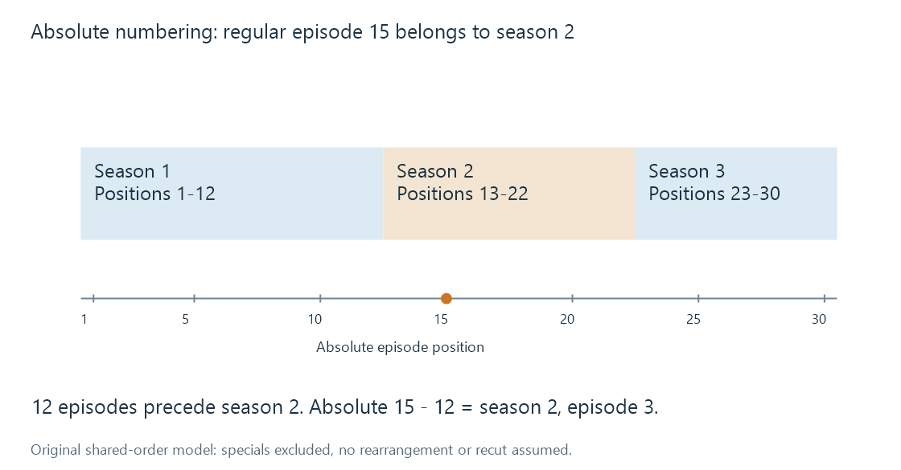

Absolute episode numbering
Absolute episode numbering assigns series-wide ordinal positions whose relationship to season coordinates depends on a defined episode sequence.
Absolute numbering gives each episode one position across a series, rather than restarting the episode counter within each season. It is useful when resources or viewers use a continuous sequence. The number still belongs to a defined arrangement: “episode 15” is not a complete identity without the series and ordering agreement.
A worked season conversion
Assume this original catalogue arrangement:
| Season | Regular episodes | Absolute interval |
|---|---|---|
| 1 | 12 | 1–12 |
| 2 | 10 | 13–22 |
| 3 | 8 | 23–30 |
With the same regular-episode sequence in both schemes, season 2 episode 3 has absolute number:
episodes in earlier seasons + episode within this season
12 + 3 = 15

To convert absolute 15 back, find the interval containing it. That is 13–22, so subtract the preceding twelve episodes: 15 - 12 = 3. The result is S02E03.
The boundaries matter. Absolute 12 is S01E12, absolute 13 is S02E01, and absolute 23 is S03E01. An assumed “ten episodes per season” formula would be wrong for this catalogue.
The arithmetic assumes the same sequence
If another order rearranges the episodes, season counts alone cannot perform the conversion. The actual episode must first be resolved through an order mapping.
Specials can change the agreement too. Suppose a special is inserted between regular absolute episodes 12 and 13. A sequence that includes it assigns 13 to the special and shifts the next regular episode to 14. A scheme that excludes specials retains 13 for that regular episode.
Both sequences can be internally consistent. The integer 13 cannot tell a library which agreement the resource's filename uses.
Combined or recut programmes add another complication: one ordinal might refer to a programme covering two episodes from another arrangement. A one-to-one number conversion then loses the segmentation relationship.
Numbering is a catalogue property
Absolute numbering does not change the media's codec, timing or stream structure. A filename like Harbour Watch 015.mkv supplies a clue about an intended ordinal; it does not state the catalogue's season partition or special-inclusion rules.
Emby's TV Naming guide is the reference for recognized resource naming. Bringing series-wide numbers into a seasonal library requires an appropriate catalogue interpretation or a verified mapping; continuous numbering is not a promise that every integration will infer that mapping from a bare number.